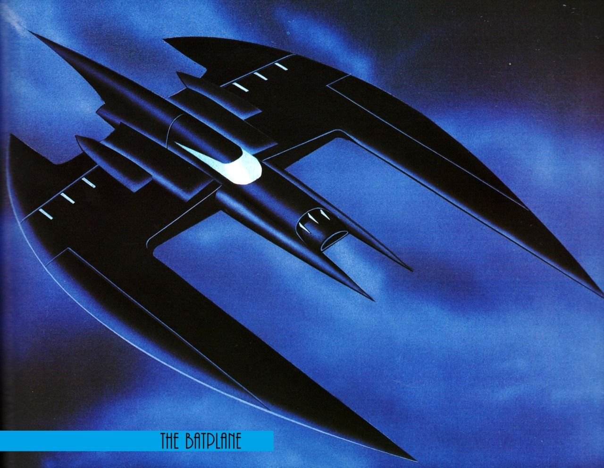

Le Batwing
Le Batwing est l'avion de Batman, créé par Bob Kane et Bill Finger en 1942. Bien qu'il possède un certain style, il n'a pas toujours été pareil. Son ancêtre le Bat-gyro ne fut utilisé qu'un temps car l'homme chauve-souris fut intéressé par les VTOL (En français appareils de décollages et d'atterrissages verticaux). En ce qui concerne le BatWing, il était auparavant appelé le Batplane (Bat=chauve-souris ; plane=avion), mais en 1992 la série appelle l'avion de Batman le BatWing car sa forme était plus comparable aux ailes de la chauve-souris (Wing=aile).